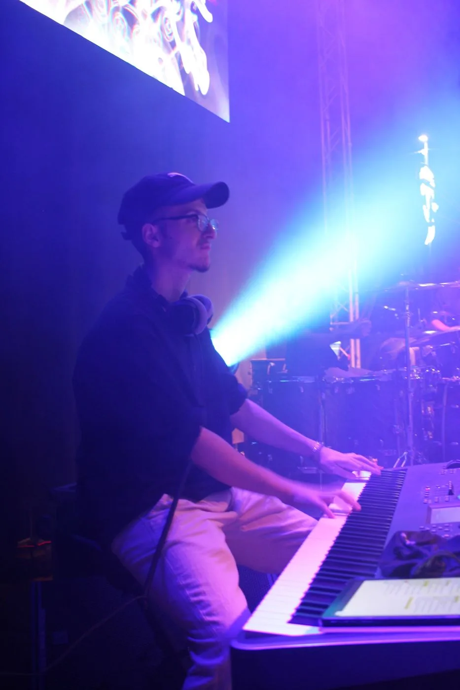

Luca Barlaam
Tastierista &pianista
Chi sono
Pianista e tastierista, classe 2005, tra studio classico e improvvisazione.
Diplomando in Pianoforte al Conservatorio "G. Braga" di Teramo con il M° Toni Fidanza, studia privatamente pianoforte dal 2012 con il M° Mauro Di Ruscio, coltivando negli anni un linguaggio personale che intreccia rigore accademico e libertà interpretativa.
Suona stabilmente con la RadiCànti FolkOrchestra, con cui partecipa a festival e rassegne nell'Italia centrale e a sessioni di registrazione in studio, contribuendo alla parte armonica e alla scrittura musicale. È inoltre membro dei DiscoNova, quartetto funky, disco e dance, del Nouveau Ensemble del sassofonista Mimmo Malandra e dei The Outlaws, tributo a Bruce Springsteen, e collabora con diversi gruppi locali.
Affianca all'attività live un percorso costante di studio e di registrazione, insieme all'insegnamento del pianoforte e delle tastiere.

Lezioni di piano e tastiera
Per tutte le età e i livelli: basi classiche solide e apertura all'improvvisazione, online o in presenza in provincia di Teramo.
Principianti
Si parte da zero: basi di teoria, tecnica e primi brani.
Intermedio e avanzato
Armonia, improvvisazione e repertorio, con un percorso su misura.
Esami e audizioni
Preparazione mirata per esami e audizioni.
Session di tastiere online
Registro le parti di tastiera per il tuo brano dal mio studio, ovunque tu sia: piano, Rhodes, Hammond, synth e pad, suonati e non programmati.
Remote keyboard sessions. I work in English too.
Tracce di tastiera
Parti registrate su misura per la tua produzione.
Arrangiamento e produzione
Armonie pensate per soul, neo-soul, nu-jazz e funky-disco.
Come funziona
Mi trovi anche su
Recensioni, portfolio e ordini sicuriLB Sounds
I miei loop e construction kit per producer: Rhodes caldi, accordi soul e groove rilassati, suonati e non programmati.
Neo Soul Keys Vol.1
24-bit / 44.1 kHz · neo soul, R&B, lo-fi, hip hop, soulful pop
In arrivo: sound pack per Yamaha MODX
Nuovi loop, beat e suoni. Seguimi per non perdere le uscite.
Foto e video
Prossimi eventi
Nuove date in arrivo. Concerti e serate private su richiesta.
Parliamone
Concerti, session, collaborazioni o lezioni: scrivimi e ti rispondo il prima possibile.
luca.barlaam5@gmail.com331 858 2444